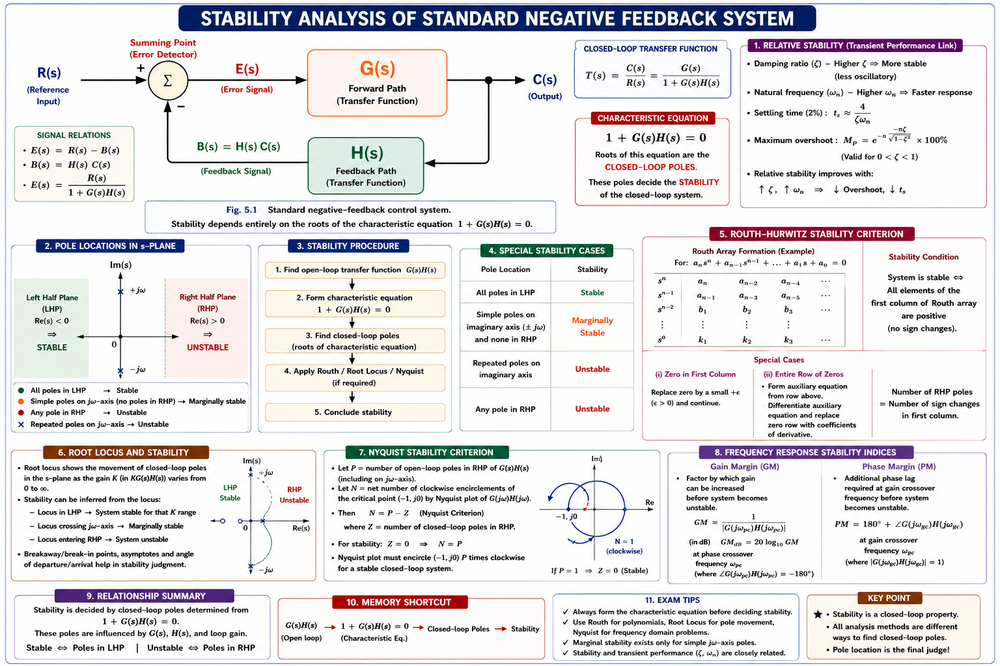
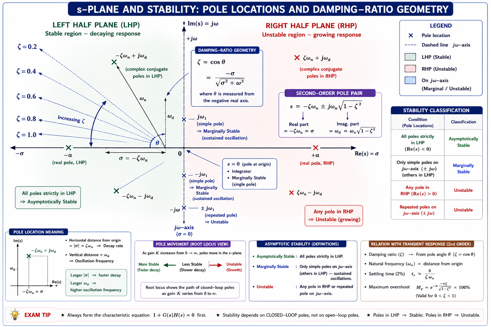
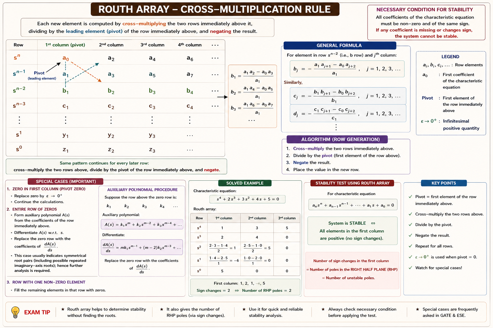
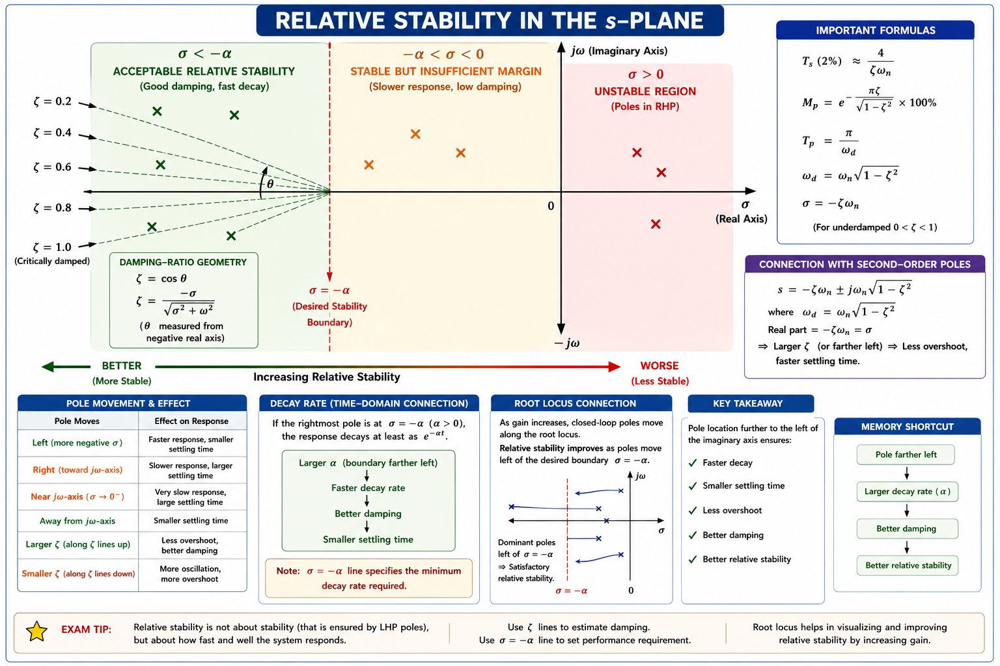

Absolute and relative stability, the characteristic equation, construction and interpretation of the Routh array, and both special cases — everything a GATE EE/EC, IES, or PSU aspirant needs, built from first principles with full derivations and solved examples.
Every closed-loop control system is built with one silent, non-negotiable requirement sitting underneath all its performance specs: the system must first be stable. An aircraft autopilot, a robotic arm, a power-plant boiler controller, or a simple room thermostat — none of them are useful if a small disturbance makes their output grow without bound. Stability is checked before anyone talks about settling time, overshoot, or steady-state error, because an unstable system has no meaningful steady-state error to speak of — its output never settles at all.
Feedback is what makes modern control possible, but feedback is also exactly what can make a system unstable. Negative feedback that arrives late (extra phase lag) can effectively turn into positive feedback at some frequency, reinforcing errors instead of correcting them. The entire purpose of stability analysis is to find, without simulating every possible input, whether this reinforcing condition ever occurs.

Historically, engineers tested stability by literally finding the roots of the characteristic equation — a tedious task for a 5th or 6th order polynomial in the days before computers. In 1877, Edward John Routh devised a purely algebraic tabulation method that answers the yes/no stability question — and counts how many roots lie in the right half of the s-plane — without factoring the polynomial at all. A few years later, Adolf Hurwitz arrived at an equivalent criterion using determinants. Together these are known as the Routh-Hurwitz criterion, and it remains, over 140 years later, the fastest hand-calculation method for stability and one of the most heavily tested topics in GATE and IES control systems papers.
"Stable" is not a single yes/no label in control theory — engineers distinguish several flavours of stability depending on how strictly the output is required to behave. Understanding these categories is a favourite conceptual (non-numerical) GATE question.
| Type | Definition | Pole Location Test |
|---|---|---|
| Absolutely Stable | Stable for all values of the system gain K, for every practically meaningful range | All poles strictly in LHP for every K > 0 |
| Conditionally Stable | Stable only for a restricted range of gain K; unstable outside that range | Poles cross into RHP beyond a critical K |
| Marginally Stable | Output neither decays nor grows — sustains constant-amplitude oscillation | Simple poles exactly on the jω-axis, none in RHP |
| Unstable | Output grows without bound for a bounded input | At least one pole in RHP, or repeated poles on jω-axis |
| Relatively Stable | Stable, but the degree of stability (margin from instability) is quantified | All poles left of a chosen vertical line s = −σ, not just left of s = 0 |
Students often label a marginally stable system as "stable" because its output does not blow up. It is not stable in the BIBO sense: a bounded sinusoidal input at the natural oscillation frequency drives the output to unbounded amplitude (pure resonance). Marginal stability is treated as a form of instability for design purposes — it is the boundary, not a safe zone.
It happens when the root locus of the open-loop poles/zeros bends back into the right half plane at high gain after starting in the left half plane at low gain — common in systems with three or more poles and a lightly-damped pair. Increasing loop gain to fix steady-state error can therefore accidentally destabilise the system — a classic design trap.
Bounded-Input Bounded-Output (BIBO) stability is the formal definition used in control theory: a linear time-invariant (LTI) system is BIBO stable if every bounded input produces a bounded output. For LTI systems described by a transfer function, this reduces to a beautifully simple geometric test on the location of the poles in the complex s-plane.

| Pole Location | Time-domain term | Behaviour as t → ∞ | Stability verdict |
|---|---|---|---|
| Simple, real, LHP (s = −a, a > 0) | \(e^{-at}\) | → 0 | Stable |
| Complex conjugate pair, LHP | \(e^{-\sigma t}\sin(\omega t + \phi)\) | Decaying oscillation → 0 | Stable |
| Simple pole at origin (s = 0) | constant (step) | Bounded, non-zero | Marginally stable |
| Simple conjugate pair on jω-axis | \(\sin(\omega t + \phi)\) | Sustained oscillation | Marginally stable |
| Repeated pole at origin or on jω-axis | \(t\), \(t\sin\omega t\) | Grows unbounded | Unstable |
| Simple or repeated, RHP | \(e^{+at}\) | → ∞ | Unstable |
A LTI system is BIBO stable if and only if all poles of its transfer function have strictly negative real parts — equivalently, all poles lie strictly inside the left half of the s-plane. Zeros of the transfer function have no effect on stability; only pole locations matter.
For a closed-loop system with forward transfer function G(s) and feedback transfer function H(s), the closed-loop transfer function is:
The poles of this closed-loop system — the values of s that make the denominator zero — are what decide stability, exactly as established in the previous section. Setting the denominator to zero gives the single most important equation in classical control theory:
Expanding this out for a typical system produces a polynomial in s:
Every coefficient a₀, a₁, … , aₙ is a real number determined entirely by the physical parameters of the plant and controller. The n roots of this polynomial are the closed-loop poles. Stability analysis is really asking: "without solving this polynomial, can I tell whether all n roots lie in the LHP?" That question is exactly what the Routh-Hurwitz criterion answers.
For a 2nd order equation the quadratic formula works fine. From 5th order onward, the Abel–Ruffini theorem guarantees no general algebraic (radical) formula exists — you would need numerical root-finding. Before computers, this made a purely algebraic stability test (Routh-Hurwitz) enormously valuable, and it is still the fastest hand method in an exam setting today.
Before building the full Routh array, a quick necessary condition can immediately rule out stability without any calculation:
This condition is necessary but not sufficient. Many students stop here and declare "all coefficients positive and present → stable." That is wrong for 3rd order and higher — the full Routh array can still reveal instability even when every coefficient is positive. For 1st and 2nd order equations only, this condition genuinely is sufficient.
The Routh-Hurwitz criterion is an algebraic method that determines how many roots of a polynomial lie in the right half of the s-plane, without actually solving for the roots. It works by arranging the characteristic-equation coefficients into a triangular array (the Routh array) and examining the signs of the first column.
Think of the Routh array as a very efficient bookkeeping device. Instead of grinding through root-finding, it repeatedly combines pairs of coefficients using a fixed cross-multiplication pattern. The remarkable mathematical fact — proved by Routh and, independently via a determinant approach, by Hurwitz — is that the number of sign changes down the first column of this array exactly equals the number of roots in the right half plane. No factoring is ever needed.
Every one of these design problems reduces to the same question: for what range of a tunable parameter (gain K, controller time constant, feedback ratio) does the characteristic equation keep all its roots in the LHP? Routh-Hurwitz answers this as an algebraic inequality on K — directly, without ever plotting a single root.
Consider the general characteristic equation of order n:
The coefficients are placed alternately into the first two rows, skipping every other coefficient:
Every row after the first two is generated purely from the two rows immediately above it, using a fixed determinant-style pattern:

Every new element = −(1/pivot) × (cross-product of the diagonal pair). Equivalently: take the 2×2 determinant formed by [previous pivot, element two-columns-right-in-that-row; current-row pivot, element two-columns-right-in-current-row], negate it, divide by the current-row pivot. Once this rhythm is memorised, a 5th-order array takes under two minutes by hand.
For \(a_0s^4 + a_1s^3 + a_2s^2 + a_3s + a_4 = 0\), the array has exactly 5 rows (s⁴ down to s⁰):
Total number of rows always equals n + 1 for an n-th order characteristic equation. Only the first column is inspected for the stability verdict — the rest of the table exists purely to generate that first column correctly.
Once the array is fully built, scan only the first column from top (sⁿ row) to bottom (s⁰ row) and count how many times the sign flips from one entry to the next.
Routh-Hurwitz gives more than a binary verdict: it tells you exactly how many roots lie in the RHP. This is frequently the actual GATE question — "how many roots of this equation lie in the right half of the s-plane?" — answered purely by counting sign changes, with no need to ever compute the roots themselves.
Each individual sign flip is counted separately. A sequence like +, −, + contains two sign changes (+ to −, then − to +), meaning two roots in the RHP — even though the array "returns" to positive. Do not just compare the first and last entries.
Then the system is guaranteed stable regardless of what the remaining columns (which were only scaffolding to compute the first column) contain. Only the first column decides the verdict.
You are allowed to multiply (or divide) an entire row of the Routh array by any positive constant to simplify arithmetic — this never changes the sign pattern or the stability verdict. You must NEVER do this to only part of a row, and you must never multiply by a negative number without tracking the sign flip it introduces.
Sometimes, while building the array, the first element of a row computes to exactly zero while other elements in that same row are non-zero. This is a problem because the very next row's formula divides by this pivot — division by zero. The standard fix is a small algebraic trick.
Replace the zero with a small positive constant ε (epsilon), continue building the array symbolically in terms of ε, complete the table, and then evaluate the sign of every ε-dependent entry in the limit ε → 0⁺. Count sign changes exactly as before, using these limiting signs.
An alternative, equally valid method some textbooks present: replace s with 1/z in the characteristic equation, clear fractions, and apply Routh-Hurwitz to the resulting polynomial in z — the number of RHP roots in z equals the number of RHP roots in s. The ε-method is faster for hand calculation and is what GATE solutions almost always use.
Students sometimes substitute a specific tiny number like 0.001 instead of treating ε symbolically. This can produce the wrong sign if the wrong order of limits is taken, and it obscures the fact that the answer must hold for every sufficiently small ε > 0. Always carry ε symbolically through the rest of the array.
A zero in the first column (with the rest of that row non-zero) signals that the system is at best marginally stable or unstable — it typically indicates a pair of roots symmetrically placed about the origin (one in LHP, one in RHP) or purely imaginary roots hiding just beyond this row. The ε-method is only used to correctly count sign changes; it never turns an unstable system into a stable one.
The second special case is more structurally significant than the first: an entire row of the Routh array computes to all zeros. This is never a coincidence — it is a direct algebraic signal that the characteristic equation has a very specific kind of root pattern.
A row of zeros appears when the polynomial contains roots that are symmetrically placed about the origin of the s-plane — the three symmetric patterns are: a pair of purely imaginary roots (±jω, marginal stability), a pair of real roots equal in magnitude but opposite in sign (±a, one stable one unstable), or a pair of complex-conjugate roots mirrored across both axes. All of these lie exactly on an "auxiliary" sub-polynomial hidden inside the original equation.
The auxiliary polynomial's roots are exactly the symmetric roots causing the zero row. Since those roots occur in pairs (each with an equal-and-opposite partner), the coefficients of the next row in an undisturbed array would naturally have been proportional to dA/ds — this is a theorem of Routh's original derivation, not an arbitrary trick.
After substituting dA/ds and completing the array, apply the usual sign-change rule to the first column. If there are still zero sign changes and the auxiliary polynomial's roots turn out to be simple and purely imaginary, the system is marginally stable (sustained oscillation) — not asymptotically stable, even though the sign-change count reads "zero." Always check whether A(s) = 0 has purely imaginary roots as the final word on the verdict.
| Aspect | Case 1 — Zero in First Column | Case 2 — Entire Row of Zeros |
|---|---|---|
| Trigger | Only first element of a row is zero | Every element of a row is zero |
| Fix | Replace 0 with ε, take limit ε → 0⁺ | Use auxiliary polynomial + its derivative |
| Root pattern implied | Roots symmetric about origin, hidden nearby | Roots symmetric about origin, exactly on this row |
| Typical physical meaning | Likely unstable or marginal | Marginal (jω roots) or unstable (±a real roots) |
Knowing a system is stable is often not enough for design — an engineer also wants to know how stable it is. A system whose poles sit just barely to the left of the jω-axis is stable on paper but may become unstable after a small change in plant parameters, temperature drift, or component ageing. Relative stability quantifies this margin.

The Routh-Hurwitz test only checks the boundary s = 0. To check a stricter boundary s = −σ, apply a simple substitution before building the array:
A power-system Automatic Voltage Regulator that is "just barely stable" (poles a hair's-width left of the jω-axis) will show extremely slow, poorly damped oscillations after a disturbance — technically stable, practically unacceptable. Design specifications routinely require poles to sit left of a minimum σ line to guarantee a minimum decay rate and adequate damping ratio, which is exactly what the shifted Routh test verifies.
Step 1 — Necessary condition: all coefficients (1, 6, 11, 6) present and positive. Passes — proceed to Routh array.
First column: 1, 6, 10, 6 — all positive, zero sign changes.
System is stable. (Confirms the known factorisation (s+1)(s+2)(s+3) = 0 → roots at −1, −2, −3, all in LHP.)
First column (limit ε → 0⁺): 1, 1, ε(+), −∞, 3 → signs are +, +, +, −, +
Sign changes: (+ → −) between s¹ and s⁰... more precisely tracking row by row: + , + , +(ε), − , + → two sign changes (row s² to s¹, and row s¹ to s⁰).
2 sign changes → 2 roots in the RHP. System is unstable. This is a classic Special-Case-1 (ε-method) GATE question.
Auxiliary polynomial from the row above (s⁴ row):
Replace the zero row with (8, 24), continue the array:
First column signs: +, +, +, +, −, + → one sign change (s¹ row negative).
1 sign change → 1 root in RHP → system is unstable. Separately, solving A(s) = 2s⁴ + 12s² + 16 = 0 gives the symmetric roots that originally caused the zero row — these can be found by treating it as a quadratic in s².
Characteristic equation: \(1 + G(s) = 0 \Rightarrow s(s+2)(s+4) + K = 0\)
Conditions for first column all positive:
0 < K < 48 for stability. At exactly K = 48, the s¹ row becomes zero (Special Case 2) — this is the marginal-stability boundary, where a pair of roots sits exactly on the jω-axis and the system sustains constant-amplitude oscillation. K = 48 is therefore the answer to "value of K for marginal stability" and also gives the frequency of sustained oscillation via the auxiliary polynomial from the s² row: \(6s^2 + 48 = 0 \Rightarrow \omega = \sqrt{8}\) rad/s.
The necessary condition (all coefficients present, same sign) is satisfied — but as emphasised in §5.4, this is necessary, not sufficient, for order 3 and above. The full array must be checked:
First column: 1, 1, −22, 24 → signs +, +, −, + → two sign changes.
The system is actually unstable with 2 roots in the RHP, despite every coefficient being positive. This is the single most important conceptual trap in the entire chapter — always build the full array for 3rd-order equations and above; never stop at the necessary condition.
Stability and Routh-Hurwitz appear in almost every GATE EE/EC and IES control-systems paper — often as a direct numerical, and just as often disguised inside a root-locus or compensator design question.
The characteristic equation of a system is \(s^4 + 2s^3 + 3s^2 + 4s + 5 = 0\). The first column of its Routh array works out to have signs +, +, −, +, +. How many roots of the equation lie in the right half of the s-plane?
Explanation: The sign sequence +, +, −, +, + contains two sign changes (+→− between rows 2 and 3, then −→+ between rows 3 and 4). By the Routh-Hurwitz theorem, the number of sign changes in the first column equals the number of RHP roots — here, 2.
For a 3rd-order (or higher) characteristic equation, all coefficients being present and of the same sign is:
Explanation: This condition merely rules out obvious instability quickly. For order ≥ 3, a positive, complete coefficient set can still hide RHP roots — confirmed only by the full Routh array (see Example 5.5). For order 1 or 2, the condition genuinely is sufficient as well.
An entire row of the Routh array becoming zero during construction indicates:
Explanation: A zero row is not an error — it is meaningful. It arises when roots occur in symmetric pairs about the origin (purely imaginary ±jω, or real ±a, or mirrored complex pairs). The auxiliary polynomial from the row above gives these roots directly.
A unity feedback system has characteristic equation \(s^3 + 6s^2 + 8s + K = 0\). At the value of K that makes the system marginally stable, the closed-loop poles on the jω-axis oscillate at a frequency of approximately:
Explanation: From Example 5.4, marginal K = 48, and the auxiliary polynomial from the s² row is \(6s^2 + 48 = 0 \Rightarrow s^2 = -8 \Rightarrow \omega = \sqrt{8} \approx 2.83\) rad/s. This K-then-ω two-step pattern (find marginal K, then use the row above the zero row as the auxiliary polynomial) is a very frequently repeated GATE pattern.
Don't judge stability by staring at whether numbers "look" positive — the only rule that matters is: count sign changes down the first column. Zero flips = stable. Every flip = one more root in the RHP. Nothing else in the array matters for the verdict.
A single zero pivot → substitute ε and take the limit. An entire zero row → build the auxiliary polynomial from the row above and differentiate. Mixing up these two fixes is the most common special-case exam mistake.
Have a question on the Routh array, special cases, or relative stability? Type below or pick a suggestion.
BIBO stable ⇔ all poles in LHP (Re(s) < 0). Characteristic equation: 1 + G(s)H(s) = 0. Zeros don't affect stability — only poles do.
Absolute (stable ∀K), conditional (stable in a K-range), marginal (poles on jω-axis), relative (poles left of s = −σ). Marginal ≠ safely stable.
All coefficients present, same sign → necessary but NOT sufficient for order ≥ 3. Full Routh array required to confirm.
Sign changes in first column = number of RHP roots. Zero sign changes → stable. New row element = −(cross-product)/pivot.
Zero pivot, rest of row ≠ 0 → replace with ε, take limit ε → 0⁺, read sign, count changes as usual.
Entire row zero → roots symmetric about origin. Use auxiliary polynomial A(s) from row above; replace zero row with dA/ds coefficients.
All technical content is derived from the following standard textbooks and learning resources. All explanations, derivations, diagrams and examples are original to Aarova AI.